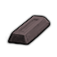
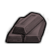
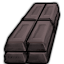
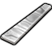
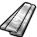
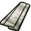

stuffProps 里含 Metallic/StrongMetallic/RuggedMetallic/… —— 能在工作台/建筑里当材质选用;组内按"能顶替到哪档金属"排
中世纪Vile本地补丁×1代钢级·中世纪·铸铁CastIron
代钢级可塑成品 940 件:家具建筑647 · 防具142 · 穿戴件40 · 近战工具96 · 远程武器7 · 其它8
金属全谱469 + 常规硬性件328 + 重机电(舱体/发电机/扫描仪)143
顶替 整档替到 代钢级·中世纪·青铜(940 件基准,含其下全部金属);比钢 +0/−1 件 —— 做不了 无菌瓦屋顶

生效·AVile's Metallurgy
生效·BVile's Metallurgy
生效·CVile's MetallurgyThings/Item/CastIronIngot StackCount (121,102,104)(121,102,104)
护甲 0.75/0.50/0.08 利钝 0.70/1.10 价值 0.8 质量 0.35 Bulk 0.35
stuff CastMetallic, Metallic, RuggedMetallic, StrongMetallic
HSK —
产自 —(无产出配方:矿石开采 / 基础掉落 / 商人购买)
源 Vile's Metallurgy
Alloys_Medieval_Ferrous.xml
中世纪Vile代钢级·中世纪·锻焊钢ForgedSteel
代钢级可塑成品 940 件:家具建筑647 · 防具142 · 穿戴件40 · 近战工具96 · 远程武器7 · 其它8
金属全谱469 + 常规硬性件328 + 重机电(舱体/发电机/扫描仪)143
顶替 整档替到 代钢级·中世纪·青铜(940 件基准,含其下全部金属);比钢 +0/−1 件 —— 做不了 无菌瓦屋顶

生效·AVile's Metallurgy
生效·BVile's Metallurgy生效·CVile's MetallurgyThings/Item/ForgedSteel StackCount (194,219,233)
护甲 0.90/0.90/0.08 利钝 1/1 价值 1.2 质量 0.35 Bulk 0.35
stuff ForgedMetallic, Metallic, RuggedMetallic, StrongMetallic
HSK SLDBar, ForgedBar
产自 forge crucible steel into tool steel billets(铁匠工坊/Advanced Steel III) ; Forge-Weld Steel (x15)(锻造厂)
源 Vile's Metallurgy
Alloys_Medieval_Ferrous.xml
中世纪Vile代钢级·中世纪·乌兹钢WootzSteel
代钢级可塑成品 940 件:家具建筑647 · 防具142 · 穿戴件40 · 近战工具96 · 远程武器7 · 其它8
金属全谱469 + 常规硬性件328 + 重机电(舱体/发电机/扫描仪)143
顶替 整档替到 代钢级·中世纪·青铜(940 件基准,含其下全部金属);比钢 +0/−1 件 —— 做不了 无菌瓦屋顶
 生效·AVile's Metallurgy
生效·AVile's Metallurgy
生效·BVile's Metallurgy生效·CVile's MetallurgyThings/Item/WootzSteel StackCount (181,194,133)
护甲 0.92/0.80/0.08 利钝 1/0.90 价值 3 质量 0.35 Bulk 0.35
stuff CastMetallic, ForgedMetallic, Metallic, RuggedMetallic, StrongMetallic
HSK SLDBar, ForgedBar, CastBar
产自 make wootz steel with pig iron (x60)(渗碳炉/Advanced Steel I) ; make traditional wootz steel (x60)(陶瓷窑炉/Advanced Steel I)
源 Vile's Metallurgy
Alloys_Medieval_Ferrous.xml